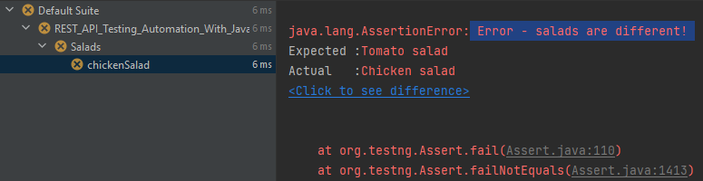
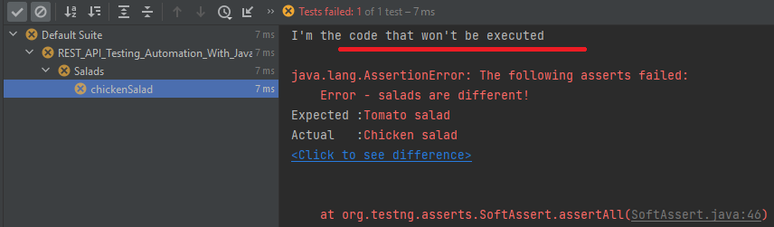
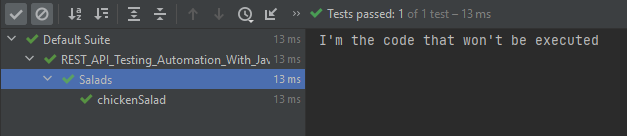
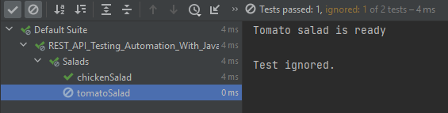
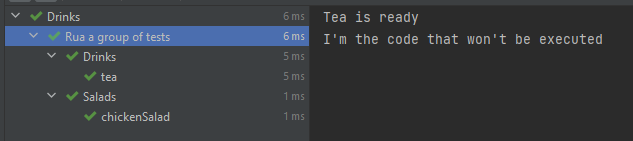
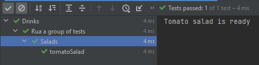
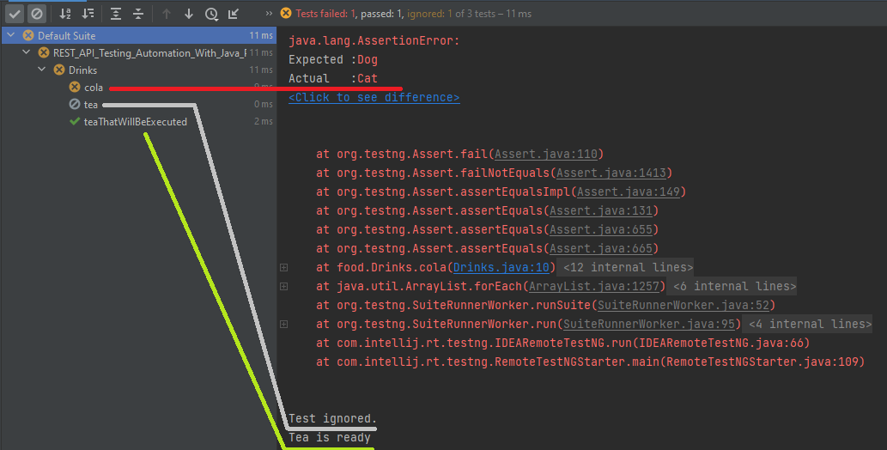
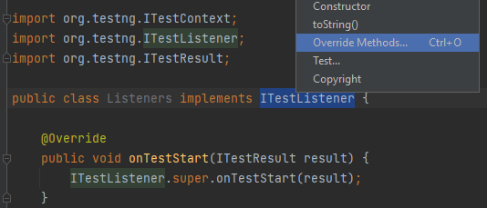
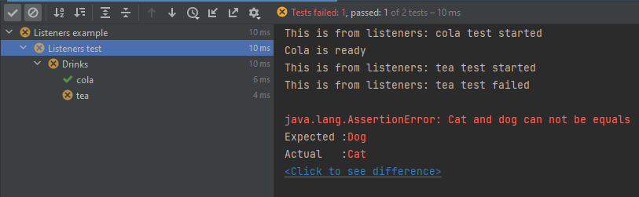

TestNg is a test automation framework for managing and executing test cases. Testng.xml file allows to configure execution of tests and define parameters. Also TestNG can generate reports. To repeat all examples below you need to create in your IDE (I use IntelliJ IDEA) a Maven project and add only one dependency in a pom.xml file:
< dependencies>
< dependency>
< groupId>org.testng
< artifactId>testng
< version>7.5
< /dependency>
< /dependencies>
Below are basic things you can do with TestNG
With TestNg we don't need to create a main() method. We use the @Test annotation that marks a method as a test case. All annotations are made with a sign "@". For example if we want to create methods that will be run BEFORE or AFTER tests, we can use corresponding annotations. Lower they are shown in the order they are executed
@BeforeSuite
@BeforeTest
@BeforeGroups
@BeforeClass
@BeforeMethod
@AfterMethod
@AfterTest
@AfterClass
@AfterGroups
@AfterSuite
If a test case failed, all code after hard assertion in this test case won't be executed. To create hard assertions just call methods Assert.assert...("actual result", "expected result", "text that will be shown if a test failed");
Assertion in test case chickenSalad() is deliberately failed
public class Salads {
@Test
public void chickenSalad() {
Assert.assertEquals("Chicken salad", "Tomato salad", "Error - salads are different!"); //this assertion will fail
System.out.println("I'm the code that won't be executed");
}
}
In the output we can see that after assertion an error was thrown and execution of code is stopped.

If we want all code in our test case will be executed even if there were errors, we can create an object of a class SoftAssert and use it to call assertions.
If soft assertion is used, a method assertAll() should be the last statement of a test case, without this method a test case will be marked as passed and no errors will be shown.
public class Salads {
SoftAssert softAssert = new SoftAssert();
@Test
public void chickenSalad() {
softAssert.assertEquals("Chicken salad", "Tomato salad", "Error - salads are different!");
System.out.println("I'm the code that won't be executed");
softAssert.assertAll();
}
}
This time all code in the method was executed and in console we see the text "I'm the code that won't be executed". The method assertAll() caught the error and threw it.

Below is an example of the test execution without the method assertAll(). Test case failed but we can't see it.

It's possible to run one test case, some or all test cases in a class\classes. But the order of test cases execution is not fixed.
All settings are made inside a tag group "test". Below are examples of testng.xml with different settings.
A class Drinks and a class Salads are located in a package "food"
package food;
public class Drinks {
@Test
public void cola() {
System.out.println("Cola is ready");
}
@Test
public void tea() {
System.out.println("Tea is ready");
}
}
package food;
public class Salads {
@Test
public void chickenSalad() {
System.out.println("Chicken salad is ready");
}
@Test
public void tomatoSalad() {
System.out.println("Tomato salad is ready");
}
}
Testng.xml
< ?xml version="1.0" encoding="UTF-8"?>
< !DOCTYPE suite SYSTEM "http://testng.org/testng-1.0.dtd">
< suite name="Drinks">
< test name="Run only one test case in a class Drinks">
< classes>
< class name="food.Drinks"> //which class will be run
< methods>
< include name="cola"/> //which method will be run
< /methods>
< /class>
< /classes>
< /test>
< test name="Run all test cases in a class Drinks">
< classes>
< class name="food.Drinks">< /class> //whick class will be run
< /classes>
< /test>
< test name="Run all test cases in classes Drinks and Salads">
< classes>
< class name="food.Drinks">< /class> //whick class will be run
< class name="food.Salads">< /class> //whick class will be run
< /classes>
< /test>
< test name="Run all test in a package"
< packages>
< package name="food">< /package> //all test cases from this package will be run
< /packages>
< /test>
< /suite>
The first option - to use annotation (enabled = false). This test case won't be run at all
@Test(enabled = false)
public void tomatoSalad() {
System.out.println("Tomato salad is ready");
}
The second - use exclude tag in testng.xml
< test name="Do not run a method in a class Drinks">
< classes>
< class name="food.Drinks">
< methods>
< exclude name="tea"/>
< /methods>
< /class>
< /classes>
< /test>
Third - to throw new SkipException to ignore the test. But this time you will see that this test exists
public class Salads {
@Test
public void chickenSalad() {
System.out.println("Chicken salad is ready");
}
@Test
public void tomatoSalad() {
System.out.println("Tomato salad is ready");
throw new SkipException("I skip this test deliberately");
}
}
In this time ignored test will be seen among executed tests

Tests within a class are executed in different order each time we run them. If we want one or more tests were executed earlier than other, we can use "priority" settings. Numeration in priority starts from 0.
public class Salads {
@Test(priority = 2)
public void chickenSalad() {
System.out.println("Chicken salad is ready");
}
@Test(priority = 1) //this method will run before chickenSalad()
public void tomatoSalad() {
System.out.println("Tomato salad is ready");
}
}
To assign a group to a test case just use annotation @Test(groups="here should be the name of group). One test case can be linked to some groups, then name of groups should be in curly brackets @Test(groups = {"the name of first group", "the name of second group"}).
public class Drinks {
@Test
public void cola() {
System.out.println("Cola is ready");
}
@Test(groups = "Regress")
public void tea() {
System.out.println("Tea is ready");
}
}
public class Salads {
@Test(groups = {"Regress", "Smoke"})
public void chickenSalad() {
System.out.println("I'm the code that won't be executed");
}
@Test(groups = "Smoke")
public void tomatoSalad() {
System.out.println("Tomato salad is ready");
}
}
To start all tests via testng.xml, that are linked with a group you should specify the name of the group in a tag "include" and what class\classes you want to run. So, in the example above the group "Regress" is in two classes: in Salads and in Drinks, if I want to run both classes I should specify them.
< ?xml version="1.0" encoding="UTF-8"?>
< !DOCTYPE suite SYSTEM "http://testng.org/testng-1.0.dtd">
< suite name="Drinks">
< test name="Run a group Regress in classes Drinks and Salads">
< groups>
< run>
< include name="Regress">< /include>
< /run>
< /groups>
< classes>
< class name="food.Drinks">< /class>
< class name="food.Salads">< /class>
< /classes>
< /test>
< /suite>
Thus, in the class Drinks the method tea() has a group "Regress" and in the class Salads the method chickenSalad() has groups "Regress" and "Smoke", but it is executed because of group "Regress".

If you don't need to execute a group just change tag "include" to "exclude". If a test is in excluded group it won't be run even if at the same time it is in included groups.
In the class Salads the method chickenSalad() lineked with 2 groups: (groups = {"Regress", "Smoke"}). In testng.xml the group "Regress" excluded, but the group "Smoke" included, but the method won't be run.
< test name="Run the group Smoke but not run group Regress">
< groups>
< run>
< exclude name="Regress"/>
< include name="Smoke"/>
< /run>
< /groups>
< classes>
< class name="food.Drinks">< /class>
< class name="food.Salads">< /class>
< /classes>
< /test>

Set ut with a help of annotation @Test(dependsOnMethods = "name of a method"). Test case can depends on some methods, in this case names of methods should be in curly brackets @Test(dependsOnMethods = {"cola", "tea"})
Tests can be dependable only vithin one class. A dependent method will only be run after the method it depends on. If this method failed then dependable method is ignored.
If you want to execute dependable test in any cases, you should add to the annotation "alwaysRun = true".
public class Drinks {
@Test
public void cola() {
Assert.assertEquals("Cat", "Dog"); //deliberately fail this method
System.out.println("Cola is ready");
}
@Test(groups = "Regress", dependsOnMethods = "cola") //this method will be ignored because the main method failed
public void tea() {
System.out.println("Tea is ready");
}
@Test(groups = "Regress", dependsOnMethods = {"cola", "tea"}, alwaysRun = true) //this method will be executed in any case
public void teaThatWillBeExecuted() {
System.out.println("Tea is ready");
}
}
Result of execution:

It means we can pass test data from testng.xml during test execution. For this:
public class Drinks {
@Parameters("typeOfCola")
@Test
public void cola(String typeOfCola) {
System.out.println("Cola " + typeOfCola + " is ready");
}
@Parameters({"typeOfTea", "amountOfSugar"})
@Test
public void tea(String typeOfTea, String amountOfSugar) {
System.out.println(typeOfTea + " tea with " + amountOfSugar + " of sugar is ready");
}
}
testng.xml:
< ?xml version="1.0" encoding="UTF-8"?>
< !DOCTYPE suite SYSTEM "http://testng.org/testng-1.0.dtd">
< suite name="Parameters">
< parameter name="typeOfCola" value="without sugar"/>
< parameter name="typeOfTea" value="Black"/>
< parameter name="amountOfSugar" value="2 spoons"/>
< test name="Pass parameters from testng.xml to methods">
< classes>
< class name="food.Drinks"/>
< /classes>
< /test>
< /suite>
It is connected with Data Driven Testing, when logic and test data are kept separately. For example you need a test method that will put a username and a password in fields and check login function. For this you might need some different pairs of username/password pairs. So, the simpliest example is below.
Create a method that will provide username and password and declare it as data provider by adding an annotation @DataProvider. It can keep information inside the method itself or read it frome other resources like xls/CSV/JSON files or even a database.
Create a test method that needs different pairs username and password, they should be parameters. Link the data provider method to it by adding to the annotation @Test the name of data provider method (dataProvider = "NAME_OF_DATA_PROVIDER_METHOD"). And it's all.
The test method will be run until all test data from the data provider method won't be processed. Also it's possible to add to the @DataProvider annotation (parallel = true), so tests will be executed in parallel, otherwise they will be executed one by one.
public class DataProviderSimpleExample {
@Test(dataProvider = "getData") //this is a linc to the data provider
public void doLogin(String userName, String password) {
System.out.println(userName + " - " + password); //here should be logic of test-case
}
@DataProvider(parallel = true) //this is data provider itself
public Object[][] getData() {
return new Object[][]{
{"1Martin@gmail.com", "pass1"},
{"2Anna@gmail.com", "pass2"},
{"3Tomr@gmail.com", "pass3"},
{"4Lui@gmail.com", "pass4"},
{"5Luka@gmail.com", "pass5"},
{"6Mila@gmail.com", "pass6"},
};
}
}
Listeners implement the interface and catch and report real time events like test fails, test starts and ets. You need to do:
Override methods

Realize methods. For example I changed methods onTestStart and "onTestFailure" so they returne the name of each started or failed test.
public class Listeners implements ITestListener {
@Override
public void onTestStart(ITestResult result) {
System.out.println("This is from listeners: " + result.getName() + " test started");
}
@Override
public void onTestFailure(ITestResult result) {
System.out.println("This is from listeners: " + result.getName() + " test failed");
}
testng.xml
< ?xml version="1.0" encoding="UTF-8"?>
< !DOCTYPE suite SYSTEM "http://testng.org/testng-1.0.dtd">
< suite name="Listeners example">
< listeners>
< listener class-name="testng.listenersExample.Listeners"/>
< /listeners>
< test name="Listeners test">
< classes>
< class name="testng.listenersExample.Drinks"/>
< /classes>
< /test>
< /suite>
I run tests from the class Drinks. The method tea() is deliberately failed.
public class Drinks {
@Test
public void cola() {
System.out.println("Cola is ready");
}
@Test
public void tea() {
Assert.assertEquals("Cat", "Dog", "Cat and dog can not be equals");
System.out.println("Tea is ready");
}
}
So after execution, in output the first row - text from Listeners method onTestStart() "This is from listeners: cola test started" because this method is called when each test is started. Then output of cola() method.
Lower, again, text from Listeners method onTestStart(), because the method tea() was started. But tea() method failed and we don't see output of this method, but we see output of listener's method onTestFailure().

You need to create a new testng.xml file and add a tag suite-files - suite-file. Then add paths to testng.xml files that you want to execute.
< ?xml version="1.0" encoding="UTF-8"?>
< !DOCTYPE suite SYSTEM "http://testng.org/testng-1.0.dtd">
< suite name="Run some suites">
< suite-files>
< suite-file path="testng.xml"/>
< suite-file path="testngParameters.xml"/>
< /suite-files>
< /suite>
To have a report you nedd to add in dependencies
ПРОВЕРИТЬ
< dependency>
< groupId>org.uncommons /groupId>
< artifactId>reportng< /artifactId>
< version>1.1.4< /version>
< /dependency>
Summary:
1 – Test parralel execution
2 – Possibility to run different groups of tests via testng.xml settings
3 – Test order execution and priority
4 – Easy automate Data Driven Cases
5 –